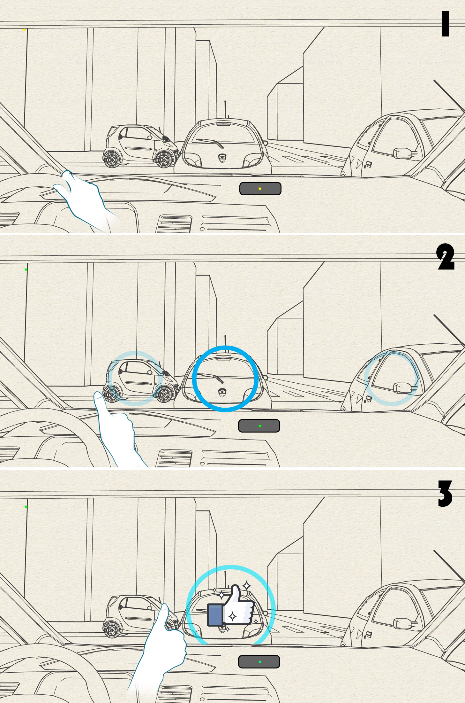
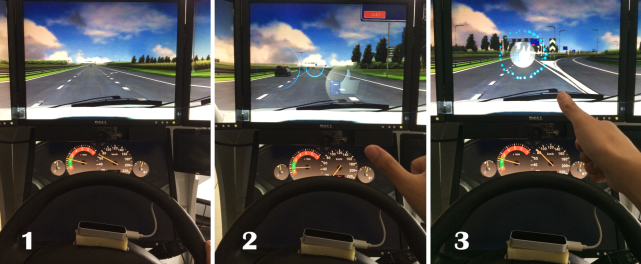
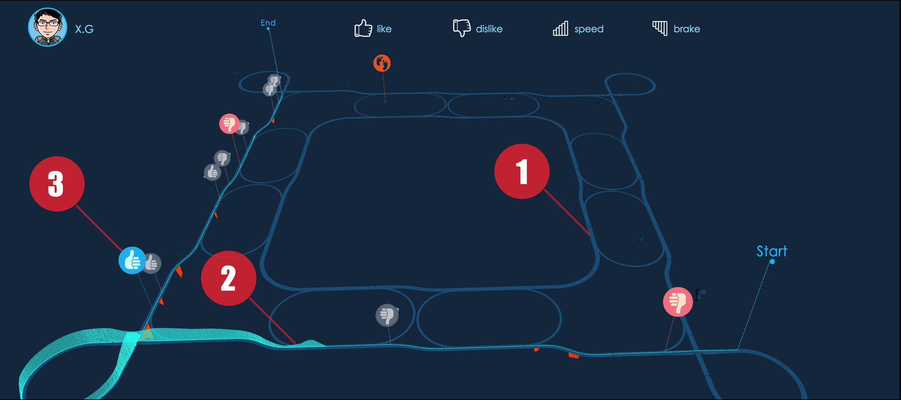

Likes/Dislikes on the Road
The road environment can be seen as a social situation and road user safety can be viewed as not just skills-based and rule-governed. Numerous studies show that intentional driving violations make an independent significant contribution to traffic accident involvement.
We propose a concept based on Driver to Driver communication and social network, which enables road users to express their anger and appreciation to others' driving behaviour. Investigation on how drivers feel about receiving feedback of evaluating their driving behavior from other drivers was conducted. The results show that such evaluation has a positive influence on reducing driving violations.
Gestural interaction for sending "Like/Dislike"
 3D maps for afterwards feedback (Please see this website for live demo)

An afterward review was suggested in a previous in-depth interview of “Like/Dislike on the Road” system. As a result, in this study, an interactive website, which enabled participants to review the scenarios in which they got and sent “Likes/Dislikes” feedback was implemented.
The 3D interactive map was programmed in javascript with the library “Threejs” (http://threejs.org). It enabled participants to observe the map by zooming in/out, rotating and locking their perspective on a specific target. Three layers of information were presented on the map (Fig.3):
1. Model layer: 3D model of the driving scenario (imported from the driving simulator), including roads, lanes, signs, important buildings etc.
2. Driving data layer: Track of driving, start point, end point, points of speeding and hard braking.
3. Feedback layer: Points of “Like/Dislike” they received and sent.
4. Video layer: Participants were able to “lock on” one of the “Likes/Dislikes” icon to review video record of it.